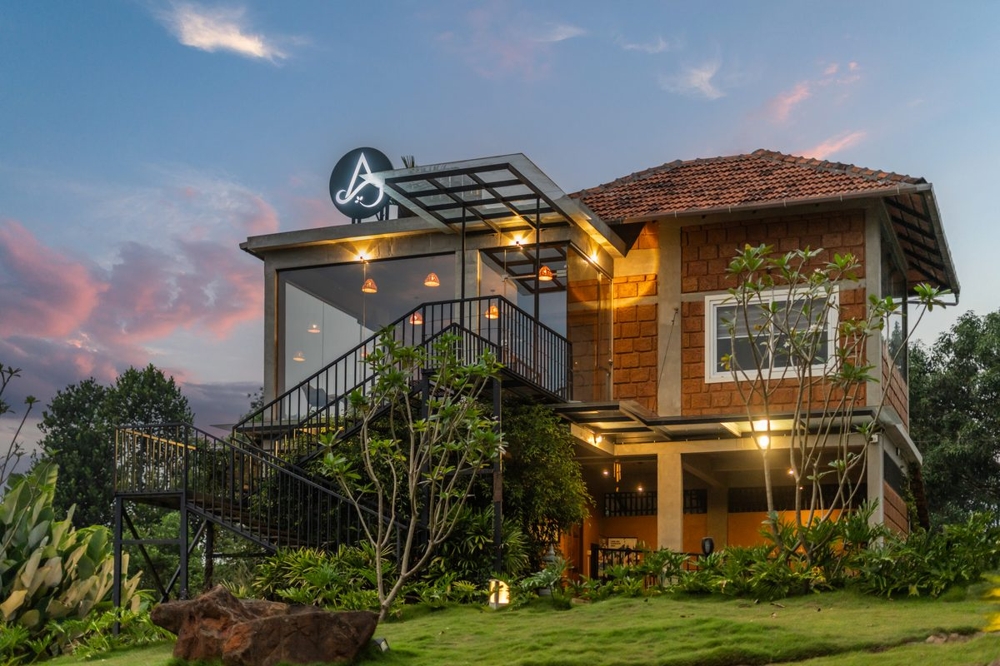
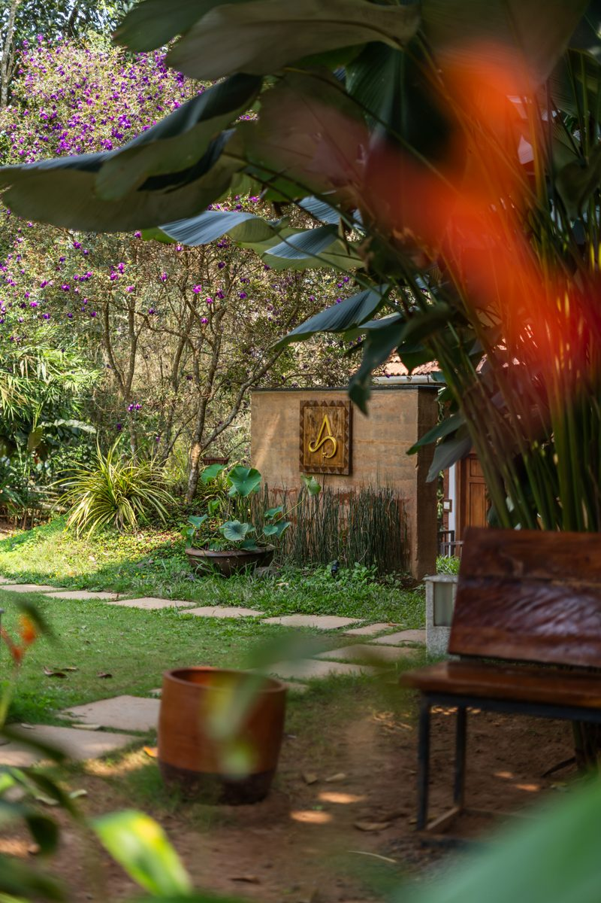
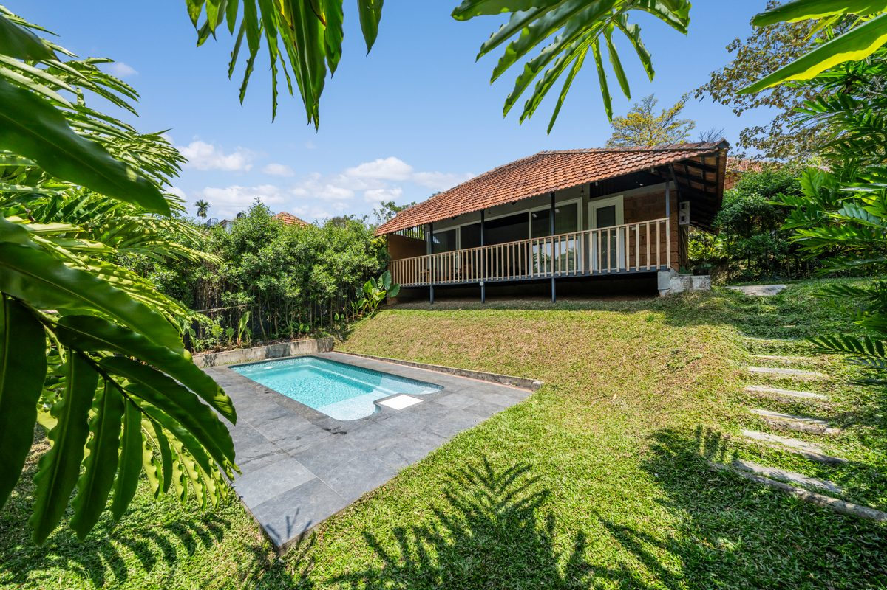
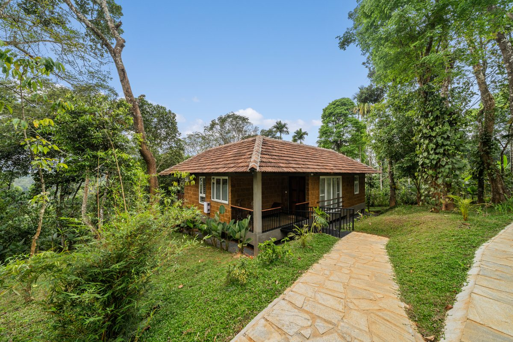
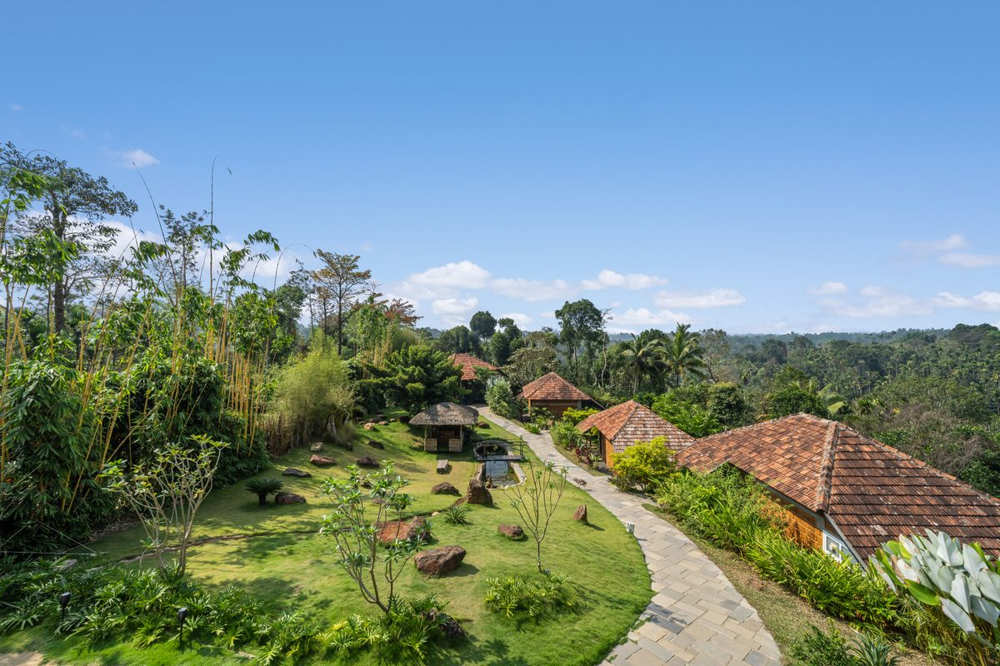
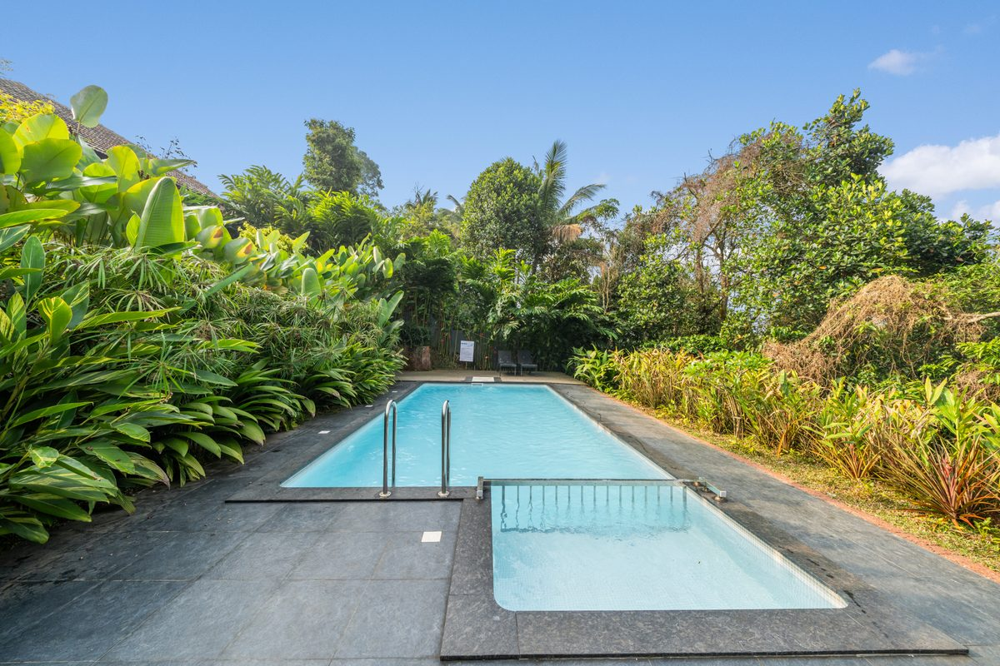

Aalterra Resort in Wayanad is the kind of project that makes architectural photography in Kerala interesting. The cottages are laterite block under clay-tile roofs. The grounds are planted so thickly that some buildings are half hidden from the path. And every one of the 26 frames on our project page was taken outdoors. No bedrooms, no bathrooms. The buildings and the garden had to tell the whole story on their own.
Laterite, tile and a glass box
Laterite has a rough, orange-brown block face, and the roof tiles sit a shade darker and redder. Put both against a blue sky and a wall of green and the colour is easy to ruin. Push the saturation and the walls go flowerpot orange while the leaves turn neon. A guest who books off a photo like that and then walks up to the real building feels the gap straight away.
The main building breaks the pattern. On one side it's the same laterite and tile as the cottages. On the other, there's a glass room on the upper floor with pendant lamps hanging inside, a steel staircase climbing the outside of the building, and the round Aalterra "A" sign on the roof. Old material next to new is exactly what an architect wants to see recorded, so that building got the frame at dusk, with the lamps on and the last pink in the sky. It's the photo that leads this post and the project page.
Photographing a resort exterior when the garden gets in the way
Heliconia, bamboo, broad-leaved plants taller than a person, a tree covered in purple flowers. In a lot of positions at Aalterra, something green stood between the camera and the building. You can fight that, by hunting for a clean angle every time, or you can use it.
This frame does the second thing. It's shot through heliconia leaves, with a red flower soft and out of focus in the corner. Behind that: a clay pot, a wooden bench, a stepping-stone path, and a laterite wall with a gold "A" emblem set into it. As a record of the architecture it isn't the most useful picture. As a picture of what it's like to walk around the place, I'd put it near the top of the set.

The same idea works for the cottages. Here, palm fronds hang into the top of the frame and throw their shadows across the lawn. Below the verandah there's a small private pool, and stone steps run up the slope on the right. You see the cottage, its pool and the planting together, which is how a guest will meet it.

Not every frame should be framed through leaves, though. Too many and the set starts to feel like it's hiding something. The set needs straight shots too: a single cottage at the end of a stone path, tall trees behind it, nothing in front.

One frame that explains the layout
Guests want to know how a resort fits together before they book. Where's the pool? How far apart are the cottages? Is it flat or on a hill? At The Old Acre, another Wayanad property, we answered that with a straight-down drone shot. At Aalterra one high frame covers most of it: the curving stone path, tiled cottages stepping down on the right, a thatched hut and a lawn scattered with boulders on the left, and forest running to the horizon.

The main pool needed a frame of its own. It's long and narrow, with steps at one end and planting crowding both edges, so we shot it down its length.

Architectural photography in Kerala: what resort owners can take from this
If your property is mostly about the outdoors, plan the shoot that way. A few things I'd put on the list:
- Each cottage type from outside, with its own pool or verandah in the frame if it has one.
- One frame that explains the layout.
- The main building at dusk with the lights on. Listings are full of daytime shots, so an evening frame stands out.
- A couple of frames through the garden, and plenty without it.
And keep the colour honest. Laterite and tile look good as they are.
Frequently asked questions
Do you photograph resorts and hotels in Kerala?
Yes. We're based in Bengaluru and shoot across India, including resorts and farmstays in Wayanad.
Can you photograph the architecture and grounds as well as the rooms?
Yes. We photograph exteriors, gardens, pools and interiors, and we can add drone photography to the same shoot.
How soon do we get the photos?
Edited photographs are typically delivered within 72 hours of the shoot.
See all 26 frames on the Aalterra Resort project page, browse more interior and architecture photography, or get in touch to plan a shoot for your property.
Follow our latest work on Instagram (@soulandfuel_media) and watch our films on YouTube.